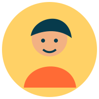
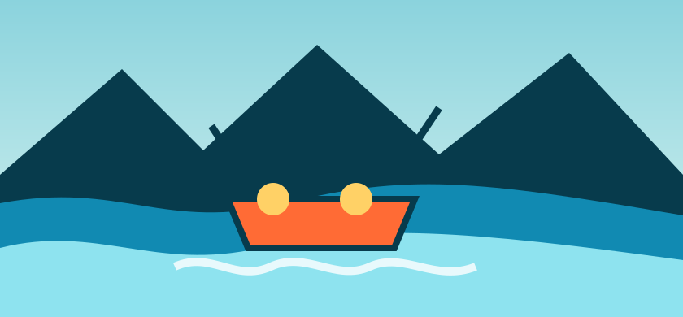
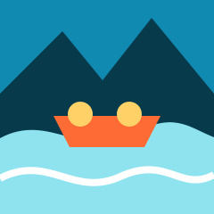
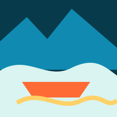
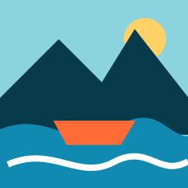
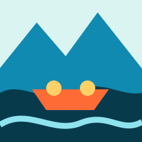
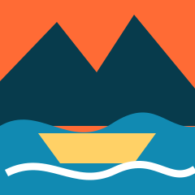

Não oferecemos apenas passeios. Criamos histórias para contar, com guias experientes, equipamentos confiáveis e muita energia para quem ama a natureza.


Não oferecemos apenas passeios. Criamos histórias para contar, com guias experientes, equipamentos confiáveis e muita energia para quem ama a natureza.
A Rio Vivo nasceu em 2012, quando um pequeno grupo de amigos decidiu compartilhar com visitantes a beleza dos rios brasileiros. Desde então, nossa equipe transformou cada descida em uma experiência segura, acolhedora e cheia de descobertas. Hoje recebemos famílias, iniciantes e aventureiros que querem sentir a força da água sem perder o cuidado com o ambiente.




